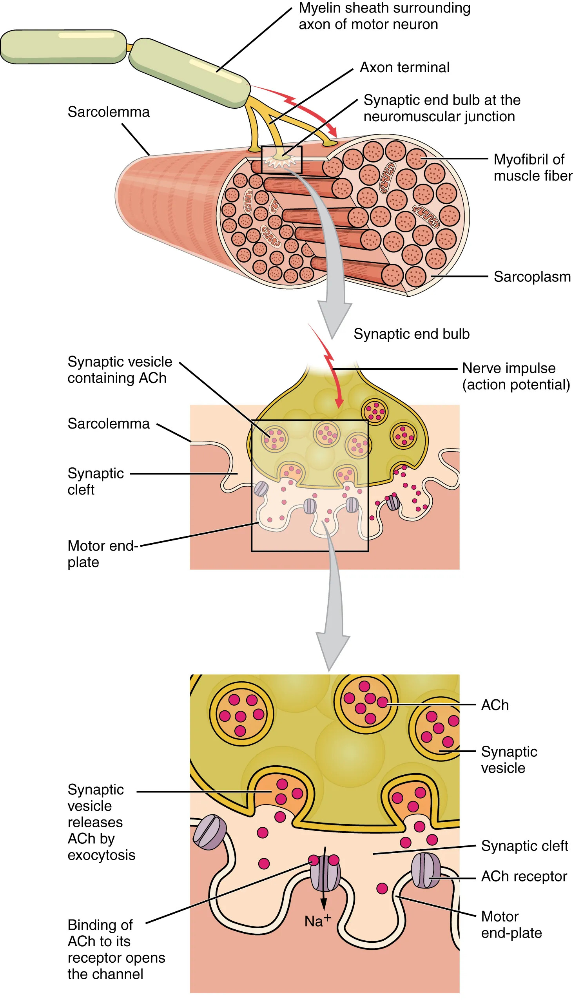
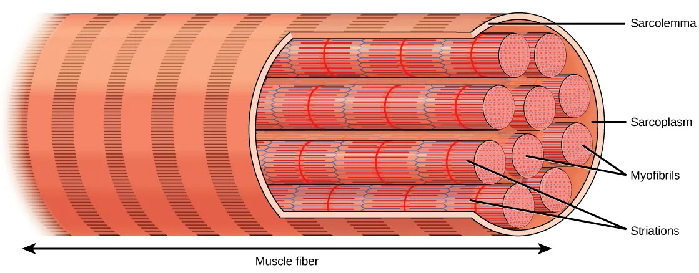
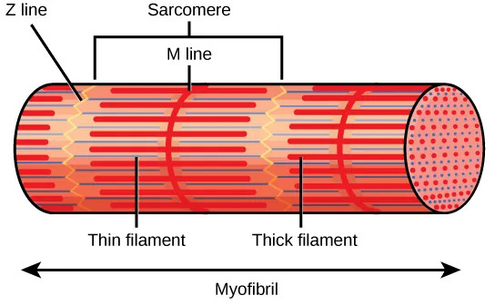
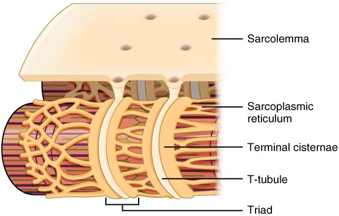
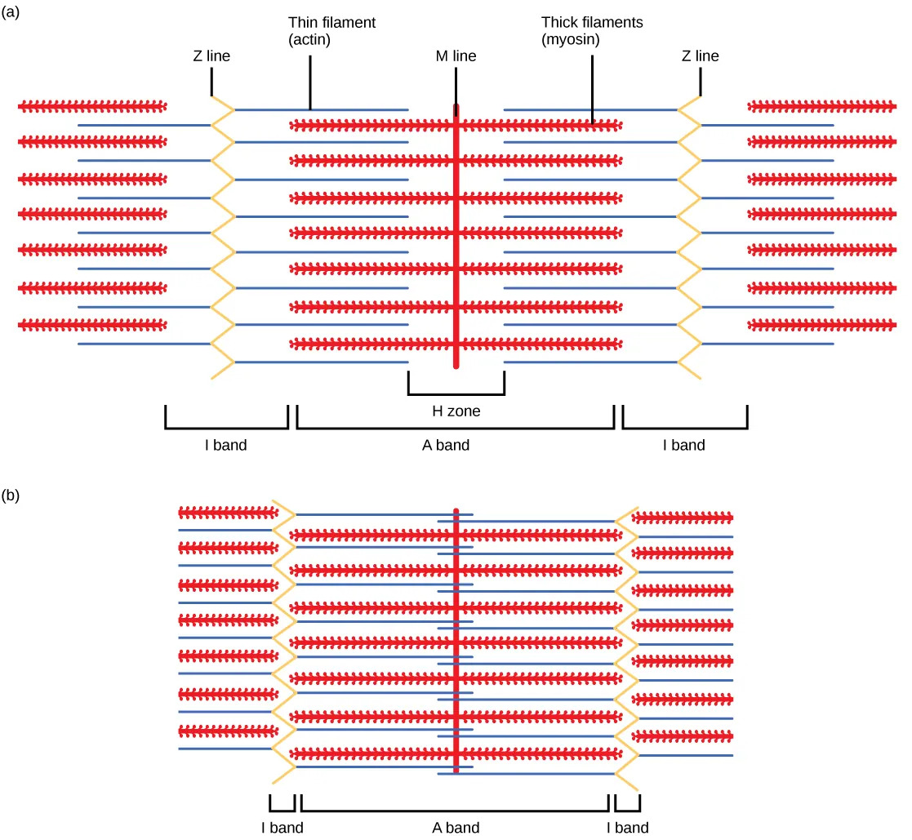
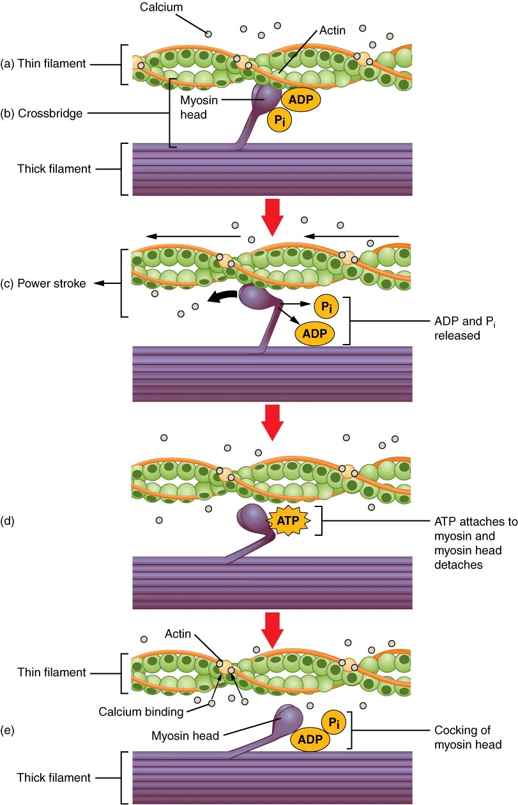

运动方式有三种：变形运动（伪足）、鞭毛及纤毛的运动、肌肉运动。
变形运动：伪足由原生质流动形成，伪足的形成由细胞质内微丝决定，微丝的滑动引起伪足运动。
鞭毛摆动是对称的，包括几个左右摆动的运动波；纤毛的运动呈波状依次进行。
运动是肌肉的最主要机能，此外肌肉还有维持身体姿势和产热等重要功能。肌肉运动靠每一个肌纤维（肌细胞）的收缩和舒张来实现。
| 动物类群 | 肌细胞类型 | 备注 |
|---|---|---|
| 腔肠动物 | 皮肌细胞 | 兼有上皮细胞作用，最早出现的肌细胞 |
| 扁形动物 | 平滑肌、斜纹肌 | 首次出现中胚层，由此发育产生 |
| 节肢动物 | 骨骼肌 + 平滑肌 | 骨骼肌首次出现 |
| 脊椎动物 | 横纹肌（骨骼肌+心肌）+ 平滑肌 | — |
神经肌肉接点 = 运动神经元轴突末梢与肌纤维细胞膜之间形成的特化突触，是化学突触的一种形式。
关键特征：
一个运动神经元可通过突触末梢分支支配多个肌纤维，共同组成一个运动单位，这是肌肉收缩的功能单位。当一根轴突兴奋时，可导致它所支配的全部肌纤维同步收缩。
肌肉所含运动单位的多少和每一运动单位中肌纤维数目的多少，与肌肉所承担任务的精密程度有关：眼球肌运动单位多，但一个单位仅2-3个肌纤维；肱三头肌运动单位少，但一个单位含上千个肌纤维。
1条骨骼肌纤维上仅形成一个神经肌肉接点，且都是兴奋性的化学突触。

1. 单肌收缩
单个动作电位造成一个肌细胞发生一次单收缩。
（1）收缩的时间性总和（频率总和）：如果第二个动作电位在第一个反应完成之前被触发，张力的增加可以叠加，形成更大反应。若频率足够高，单收缩变得模糊，收缩曲线成为平滑线，肌肉张力达到最大——称为强直收缩。
（2）收缩的空间性总和（多纤维总和）：肌肉张力的逐步增加可能由于越来越多运动单位被启动。不同运动单位收缩的叠加 → 空间性总和。
当一块肌肉中每一个运动单位同时受到有效刺激时，整肌收缩的力量和幅度都最大；如果高频刺激，整肌产生力量和幅度都最大的持续收缩。当只有部分运动单位同时受刺激时，整肌收缩的力量和幅度至少有一不是最大。
2. 肌纤维的收缩机制
骨骼肌纤维长度：一般1～10cm，有的可超30cm，直径10～100μm；心肌长100μm，直径10～20μm；平滑肌长50～400μm，直径2～10μm。
（1）横纹肌细胞的超微结构

①显微结构：肌膜（细胞膜）+ 肌质（肌浆，细胞质基质）。骨骼肌纤维是多核细胞（发育过程中多个成肌细胞融合而成），核分布于肌膜附近。肌质中含1000～2000条平行排列的肌原纤维。
横纹肌的肌原纤维排列整齐，显示整齐的明暗相间排列：

②亚显微结构（肌管系统）：

兴奋—收缩耦联机制：
肌丝结构：
细肌丝：由肌动蛋白、原肌球蛋白和肌钙蛋白三种蛋白质构成，比例7:1:1。
粗肌丝：由上百个肌球蛋白分子组成。肌球蛋白分子由2条重链（α螺旋）+ 2对轻链组成。头部：一对轻链为ATP结合位点（有ATP酶作用），另一对为肌动蛋白结合位点。
粗肌丝排列：尾部朝向A带中央（H区），头部朝向I带。粗肌丝只分布在A带，贯穿A带全长。从横切面看：每一粗肌丝外周有6条细肌丝，每一细肌丝外周有3个粗肌丝。
（2）横纹肌收缩的过程——滑行学说
肌节缩短时，A带不缩短，H区和I带缩短。如果收缩很强，H区和I带甚至可全部消失。这一过程用"滑行学说"解释：

粗肌丝的横桥与细肌丝之间存在着结合、划动和分开三个基本步骤。
横桥周期（Cross-Bridge Cycle）：
ATP水解供能发生在粗肌丝游离的头部，而不是划动的过程。从ATP结合→ATP水解→横桥形成→Pi解离→ADP解离，称为一个横桥周期。

肌球蛋白和肌动蛋白直接参与收缩 → 收缩蛋白；原肌球蛋白与肌钙蛋白不直接参与收缩，但调控收缩蛋白间相互作用 → 调节蛋白。
调节机制：
结构特点：平滑肌细胞单核，肌膜多处内凹形成袋状小凹（含高浓度Ca²⁺，可达肌浆中上万倍），小凹膜上有电压门控L型Ca²⁺通道。平滑肌没有T管，小凹附近的肌质网也极不发达。
兴奋特点：去极化、反极化、复极化主要依赖电压门控L型Ca²⁺通道的开放和Ca²⁺内流（膀胱和输尿管平滑肌去极化主要靠Na⁺内流）。复极化依赖的电压门控K⁺通道打开也需要胞内Ca²⁺激活。L型Ca²⁺通道开放缓慢 → 动作电位时程较长。
收缩启动机制：
平滑肌分类：
心肌收缩三大特点：
兴奋—收缩耦联（与骨骼肌的差异）：
心肌有很长的不应期 → 不存在强直收缩。
| 比较项目 | 骨骼肌 | 心肌 | 平滑肌 |
|---|---|---|---|
| 兴奋肌膜的神经递质 | 乙酰胆碱 | 儿茶酚胺 | 乙酰胆碱 |
| 肌膜去极化主要离子 | Na⁺内流 | 快反应细胞Na⁺内流；慢反应细胞Ca²⁺内流 | Ca²⁺内流（也有Na⁺内流） |
| 肌膜Ca²⁺门控通道类型 | 电压L型 | 电压L型、G蛋白耦联配体L型 | 电压L型、G蛋白耦联配体L型 |
| 肌质网是否发达 | 发达 | 发达 | 极不发达 |
| 胞外Ca²⁺入胞主要作用 | 通道几乎不打开，入胞极少 | 肌膜去极化，且刺激肌质网释放大量Ca²⁺ | 肌膜去极化，且与钙调蛋白结合 |
| 肌浆Ca²⁺来源 | 肌质网释放 | 胞外内流+肌质网释放，后者为主 | 胞外内流+肌质网释放，前者为主 |
| 肌质网释放Ca²⁺的直接诱因 | 肌膜Ca²⁺通道构象变化的直接机械刺激 | 胞外内流的Ca²⁺ | 第二信使IP₃ |
| 肌浆Ca²⁺在收缩中的直接作用 | Ca²⁺与肌钙蛋白（Tn）结合 | Ca²⁺与肌钙蛋白（Tn）结合 | Ca²⁺与钙调蛋白（CaM）结合 |
| 细胞水平的收缩特点 | 时间性累加 | 时间性不累加（不应期很长） | 时间性累加 |
| 组织水平的收缩特点 | 空间性累加 | 空间性不累加（整肌为功能合胞体） | 空间性累加 |
肌浆中的Ca²⁺是肌纤维兴奋—收缩的耦联因子。肌浆Ca²⁺浓度升高：平滑肌和心肌源于胞外Ca²⁺内流和肌质网Ca²⁺释放，骨骼肌源于肌质网Ca²⁺释放。
关键实验：无Ca²⁺生理盐水中，心肌和平滑肌很快停止收缩，骨骼肌能保持长时间收缩（直到胞内Ca²⁺耗尽）。
神经支配方式差异：